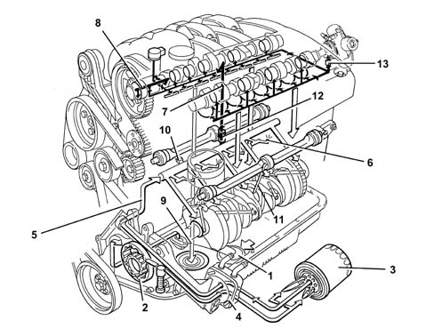
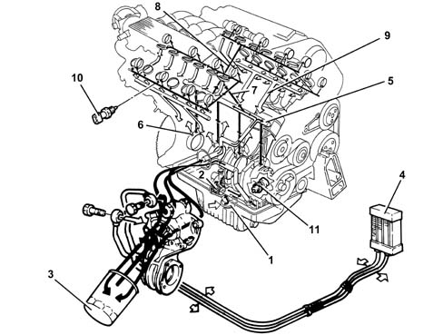
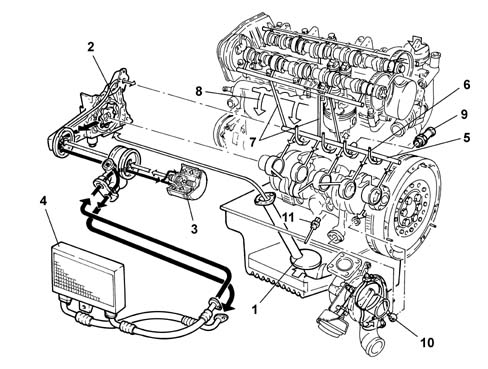

INTRODUCTION - ENGINE LUBRICATION
- Path
- Descriptions > 10 ENGINE UNIT > 1084 ENGINE LUBRICATION SYSTEM > INTRODUCTION - ENGINE LUBRICATION
- Kind
- system description
- Applies to
- engines: 2.0 JTS, 3.2 V6, 1.9 JTD 16V; all production periods
- Interactive page
- https://sloeber94.github.io/elrnDB-aGt/en/#/125000305
Applies to: engines: 2.0 JTS; all production periods
CONSTRUCTION SPECIFICATIONS
ENGINE LUBRICATION SYSTEM

1 - Suction head with filter mesh
2 - Oil pump
3 - Oil filter cartridge
4 - Oil /water heat exchanger
5 - Main longitudinal channel
6 - Jets (piston skirt cooling)
7 - Camshaft supports vertical channels
9 - Variable valve timing actuation channels
9 - Oil falling back into sump
10 - Switch for engine oil pressure warning light
11 - Counter-balance shaft channels
12 - Anti-reflux valve
13 - High pressure fuel pump coupling lubrication jet
Applies to: engines: 3.2 V6; all production periods
OPERATION
ENGINE LUBRICATION SYSTEM

1 - Suction head with filter mesh
2 - Oil pump
3 - Oil filter cartridge
4 - Engine oil cooling radiator
5 - Main longitudinal channel
6 - Jets (piston skirt cooling)
7 - Vertical channel (camshaft mounting - right head lubrication)
8 - Vertical channel (camshaft mounting - left head lubrication)
9 - Oil falling back into sump
10 - Switch for engine oil pressure warning light
11 - Engine oil temperature sensor
Applies to: engines: 1.9 JTD 16V; all production periods
COMPOSITION
STRUCTURE
The engine lubrication system is shown below.

1 - Suction head with filter mesh
2 - Oil pump
3 - Oil filter cartridge
4 - Engine oil cooling radiator
5 - Main longitudinal channel
6 - Jets (piston skirt cooling)
7 - Vertical channel (camshaft mounting lubrication)
8 - Oil falling back into sump
9 - Switch for engine oil pressure warning light
10 - Turbocharger lubrication pipes
11 - Engine oil level sensor